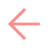

<div class="sidebar-content">
  <!-- Button to close the sidenav to prevent keyboard traps -->
   <button class="close-button" (click)="this.sidebar.close()">
    
   </button>

  <!-- Navigation buttons for the recipes table, users table, and settings page -->
  <button class="navigation-button" (click)="goToPage('/recipes')">
    
    Recipes
  </button>
  <button class="navigation-button" (click)="goToPage('/users')">
    
    Users
  </button>
  <button class="navigation-button" (click)="goToPage('/settings')">
    
    Settings
  </button>
</div>